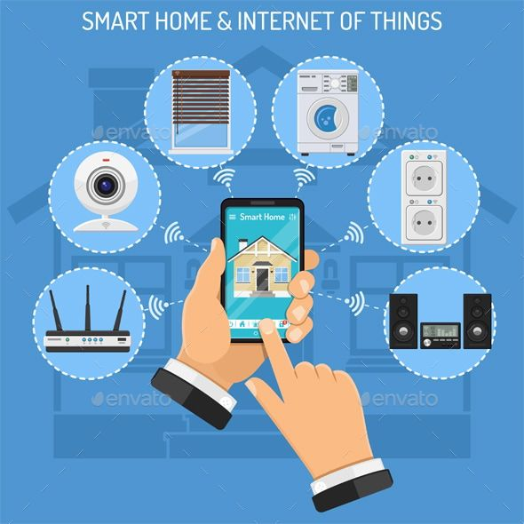

1. Inteligencia Artificial
La Inteligencia Artificial permite el desarrollo de sistemas capaces de realizar tareas que requieren aprendizaje automático e inferencia lógica.
Estudiante: Pineda Stephany
Este sitio presenta una visión integral sobre las tecnologías clave de la Ingeniería en Innovación Digital, abarcando inteligencia artificial, IoT, ciberseguridad, desarrollo de software y robótica.
La Inteligencia Artificial permite el desarrollo de sistemas capaces de realizar tareas que requieren aprendizaje automático e inferencia lógica.
El Internet de las Cosas interconecta dispositivos físicos para recopilar datos en tiempo real mediante sensores inteligentes.
La protección de datos ha pasado de métodos tradicionales inseguros a soluciones encriptadas avanzadas.
Creación de aplicaciones escalables mediante algoritmos optimizados de complejidad O(n2) o logarítmica.
Sistemas mecatrónicos controlados por microcontroladores H2O y circuitos integrados.
Haz clic en las imágenes para ir a las diferentes secciones:
